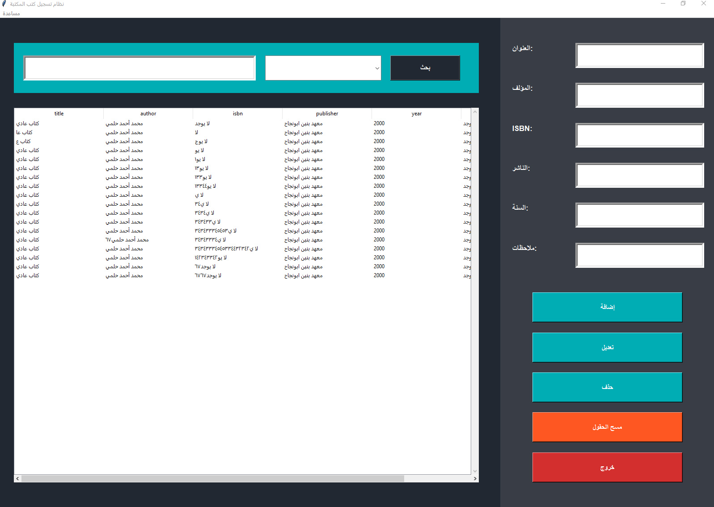
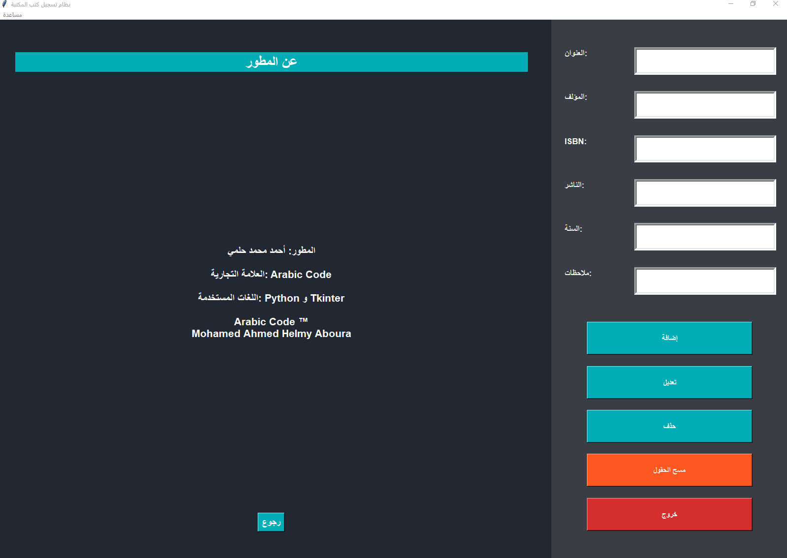

روابط تحميل مشاريعي
برنامج تسجيل طلاب للتحميل اضغط هنا
يوجد ملف للبرنامج ل64 bit وملف أخر لي 32 bit
ملحوظة :
يجب وضع ملف برنامج تسجيل الطلاب المسمي ب مهم جدا في قرص E وان لم يكن لديك قرص E فغير أي قرص ليكون القرص E
 
| الاسم | بلد الاقامة | الخبرات حتي الأن | رابط قناة يوتيوب | رابط صفحة فيس بوك |
|---|---|---|---|---|
| محمد أحمد حلمي | الزقازيق - الشرقية - مصر | لغة python ولغة Html , css | Youtube |